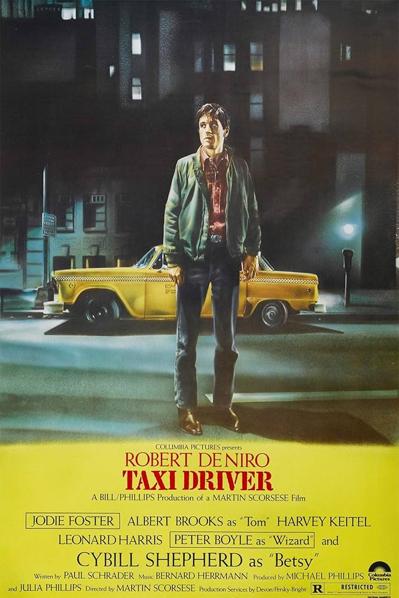
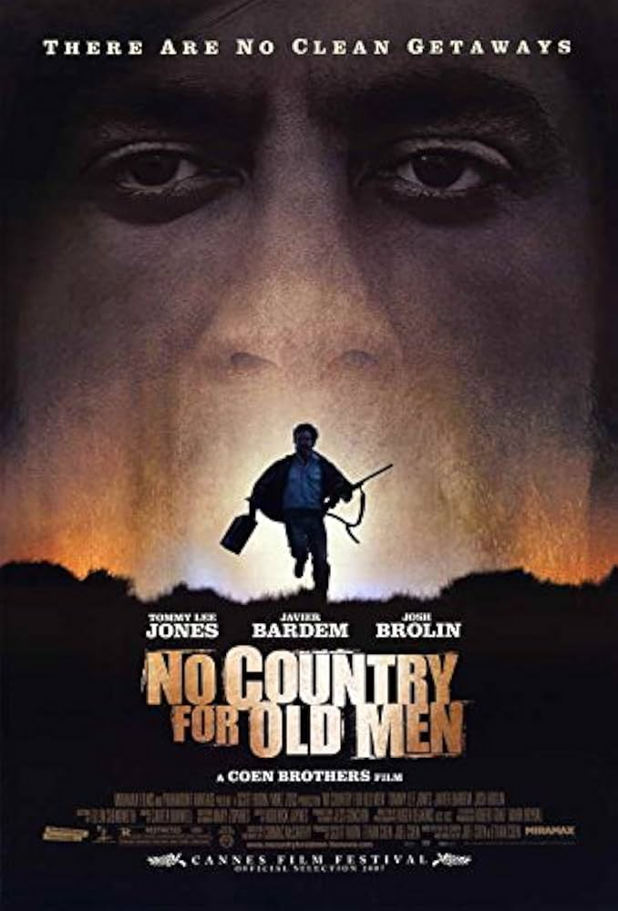
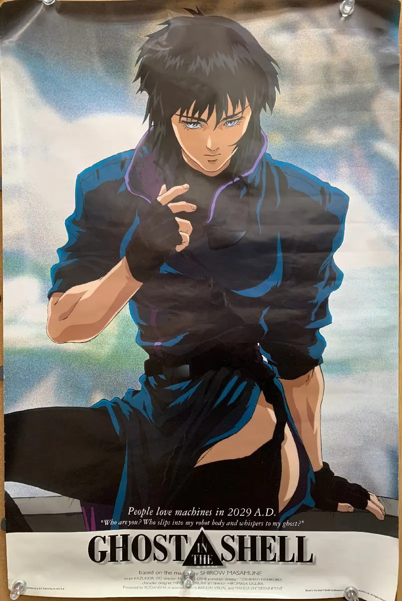
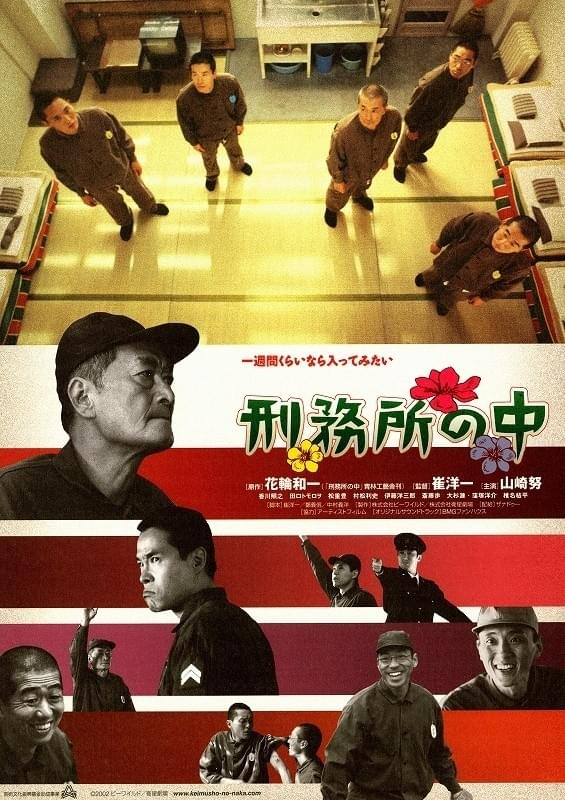

タクシードライバー
1976年公開 ロバート・デニーロ主演
ベトナム戦争から帰還した1人の青年は、ニューヨークの夜の街をタクシーで流しながら、世界の不浄さに苛立ちを感じていた。大統領候補の選挙事務所に勤める女性と親しくなる彼だったが、その恋もうまくいかず。やがて、闇ルートから銃を手に入れた彼は自己鍛錬を始める。そして、彼の胸中にひとつの計画が沸き上がる。
ノーカントリー
2007年公開 ハビエル・バルデム トミー・リー・ジョーンズ ジョシュ・ブローリン 主演
メキシコ国境に近いテキサスの荒野。帰還兵の男が、麻薬取引中に銃撃戦が行われたと思しき現場に出くわす。複数の死体の近くには、200万ドルの大金が残されていた。彼は、危険と知りつつそれを持ち帰ってしまう。そしてそれがきっかけで、冷酷な謎の暗殺者に追われる身となる。
GHOST IN THE SHELL / 攻殻機動隊
1996年公開
西暦2029年。公安の精鋭による特殊部隊「攻殻機動隊」が、国際手配中のハッカー「人形使い」が日本に現れるとの情報を掴む。そんな折に搬送されてきた、事故に遭ったというサイボーグ。その体には、危険な秘密が隠されていた。
刑務所の中
2002年公開
ハナワカズイチは銃砲刀剣類等不法所持、火薬類取締法違反で懲役3年の刑を受け、日高刑務所での刑務所生活を始める。ハナワは4人の受刑者たちと同房し、次第に奇妙な連帯感で結ばれていく。